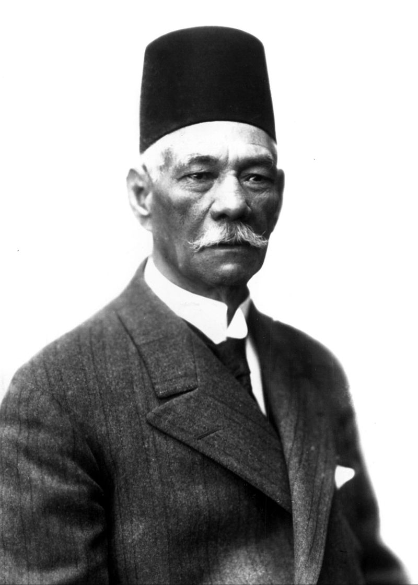
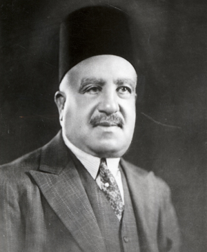
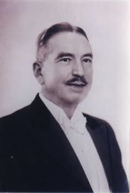
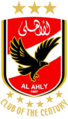
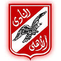
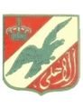

|  |
|
|  | بداية الحصول علي البطولات (1922-1932) جاء عام 1922 وتم تعيين جعفر والي باشا رئيسا للأهلي ليستمر في قيادة النادي مدة 18 عام، وهي المدة الأطول لأي رئيس جاء في تاريخ النادي حتي الآن،وفي نفس العام دخلت الكهرباء للنادي الأهلي لأول مرة وكان ذلك واحدًا من مشروعات النادي الكبري، حيث كان النادي يضاء بالفوانيس والغاز منذ تأسيسه حتى دخول الكهرباء، وتكلف دخول الكهرباء 52 جنيهًا ليحتفل بذلك الأعضاء احتفالاً كبيرًا.[15] كما شهد عام 1922 حدثا كبيرا في تاريخ الأهلي الكروي حيث انضم لاعب واعد اسمه محمود مختار-أو كما يشتهر بين الجميع باسم مختار التتش- لصفوف الفريق ولعب أول مباراة ضد فريق الطيران الإنجليزي في كأس السلطان حسين مسجلاً هدف الفوز في المباراة التي انتهت 2-1 لصالح الأهلي، وأصبح التتش فيما بعد واحداً من أساطير النادي.[15] و في عام 1923، أدخل الأهلي بقيادة التتش أول بطولة لخزانة النادي عندما حقق كأس السلطان حسين متفوقاً على الزمالك حامل اللقب آنذاك، ثم أضاف بعد ذلك 6 ألقاب من تلك البطولة أخرى ليكون صاحب الرقم القياسي في عدد مرات الفوز حتى آخر نسخة عام 1938[16]،أول خطوة في طريق الأهلي للمجد كانت في إبريل 1923 عندما اقتنص الفريق الكأس لأول مرة بالفوز علي فريق (دراجونز) المكون من أعضاء الجيش البريطاني، وفاز الأهلي بالمباراة 2-1 بهدفي أحمد مختار وخليل حسني، لتنطلق احتفالات تاريخية لم تشهدها مصر من قبل حيث قامت مظاهرة شعبية من ملعب المباراة بالعباسية وحتى مقر النادي الأهلي بالجزيرة، وحمل جمهور الأهلي لاعبيه علي الأعناق في شوارع القاهرة احتفالاً بالفوز على الإنجليز، والذي اعتبره الكثيرون انتصاراً للوطنية حيث حرصت المظاهرة على المرور أمام ثكنات الجيش البريطاني في قصر النيل حتى يشاهدها الإنجليز. وبعد عام واحد من الفوز بلقب كأس السلطان حسين، فاز الأهلي بكأس مصر (كأس الأمير فاروق) عام 1924 لأول مرة بانتصاره علي السكة الحديد 4-1 في إياب المباراة النهائية بعد انتهاء مباراة الذهاب بالتعادل السلبي،وسجل مختار التتش هدفين كما سجل كل من أحمد مختار وخليل حسني هدفاً لكل لاعب.[17] حقق الأهلي بطولة دوري منطقة القاهرة للمرة الأولي في نسختها الثالثة عام 1925، ليبدأ مسيرة تفوق استمرت حتى آخر نسخة من البطولة عام 1958 حيث وصل عدد مرات فوز الأهلي بعد ذلك بالبطولة إلي 16 مرة وضعته في مقدمة الأندية الحاصلة عليها[18]، ثم أضاف المارد الأحمر لقبه الثاني من بطولة كأس السلطان حسين بالفوز علي الاتحاد السكندري 4-1 في النهائي بفضل هاتريك لسيد أباظة، وبعد أيام قليلة يعود الأهلي ليهزم الاتحاد مجدداً 3-0 في إياب نهائي كأس مصر والذي سجل فيه سيد أباظة أيضا هدفا إلي جانب ثنائية حسين حجازي، وبذلك حقق الأهلي الثلاثية المحلية لأول مرة في تاريخ أندية مصر بفوزه بجميع بطولات موسم 1924-1925، كما حقق الثلاثية الثانية في عام 1927 [19] وحققها للمرة الثالثة في عام 1931[20]، وفي نفس العام 1925 صدر قرار جريء من الجمعية العمومية للنادي في بألا يقبل النادي في عضويته إلا المصريين.[21] و حقق الأهلي لقباً غالياً عام 1926 عندما فاز بكأس السلطان حسين للمرة الثالثة، منتصراً علي الترسانة 1-0 في النهائي، وكانت أهمية هذا اللقب أنه أعطي الأهلي الأفضلية علي المختلط (الزمالك) صاحب أكبر عدد من الألقاب في تلك البطولة آنذاك، فأصبح الأهلي في المقدمة ولم يتنازل عن الرقم القياسي لعدد مرات الفوز حتي آخر نسخة من البطولة عام 1938.[22] في موسم 1927-1928، جاء ولأول مرة في التاريخ اصطدام الأهلي بمنافسه التقليدي الزمالك في المباراة النهائية لكأس مصر، واستطاع المارد الأحمر الاحتفاظ بلقب البطولة للمرة الرابعة والثانية علي التوالي، بفوزه 1-0 بهدف ممدوح مختار صقر.[23] و في صيف عام 1929، قام فريق الكرة بالأهلي بعمل جولة أوروبية هي الأولي من نوعها حيث سافر الفريق لمواجهة عدة أندية أوروبية مثل فناربخشة وغلطة سراي في تركيا. ثم توجهت البعثة إلي ألمانيا لملاقاة لايبزيغ وبوروسيا برلين وميونيخ 1860 وغلزنكيرشن، وانتهت الرحلة في بلغاريا بمباراتين ضد فرق ليفسكي صوفيا وسلافيا صوفيا.[24] في نوفمبر عام 1930، تفوق الأهلي علي منافسه التقليدي الزمالك بنتيجة 4-0 في مباراة ضمن دوري منطقة القاهرة شهدت تألقاً تاريخياً لمختار التتش، الذي أصبح أول لاعب يسجل هاتريك (ثلاثة أهداف) في تاريخ لقاءات ديربي القاهرة.[25] و بحلول عام 1932 وصل إجمالي الألعاب التي تُمارس داخل النادي الأهلي ل10 ألعاب هي: كرة القدم، الملاكمة، الكرة الطائرة، التنس، كرة السلة، تنس الطاولة، رفع الأثقال، ألعاب القوي، البلياردو، الكروكيه.[26] و في إبريل عام 1932، أصدر النادي الأهلي كتاباً يسرد فيه تاريخ وبطولات النادي احتفالاً بمرور 25 عاما علي التأسيس.[27] و بدأت الإذاعة المصرية في نقل مباريات النادي الأهلى لكرة القدم على الهواء مباشرة في عام 1934، وكان الأهلي يتقاضى 75 جنيهًا نظير نقل المباراة، وفي موسم تألق فيه مختار التتش مع الهداف حسين حمدي، اقتنص الأهلي درع دوري منطقة القاهرة متفوقاً علي غريمه التقليدي المختلط (الزمالك) في مباراتي المسابقة بنتائج 3-0 و2-1 وقد سجل التتش في المباراتين.[28] واستمرالنادي الأهلي مع مختار التتش ونخبة من نجوم الثلاثينيات أمثال حسين حمدي وعبد الكريم صقر وأمين شعير ولبيب محمود في قيادة الأهلي للفوز بدوري منطقة القاهرة لعدة سنوات متتالية أكد فيها هذا الجيل هيمنة الأحمر علي البطولة من حيث عدد مرات الفوز، وأضاف الأهلي بطولتي عام 1935 و 1936 متفوقاً علي نادي السكة الحديد صاحب المركز الثاني في الموسمين.[29] |
|  | أول طريق الأرقام القياسية (1936-1946) في نهاية موسم 1936-1937، حصد الأهلي الثنائية بالفوز ببطولتي دوري منطقة القاهرة وكأس مصر متفوقاً علي منافسيه المختلط (الزمالك) و السكة الحديد، حيث حسم الأهلي الدوري في آخر أسبوع عندما حقق فوزاً ساحقاً 4-1 علي الزمالك ليحسم المركز الأول بفارق 3 نقاط عن منافسه التقليدي، وفي نهائي الكأس فاز الأهلي 3-2 علي السكة الحديد في مباراة مثيرة لم يحسمها إلا هدف عبد الكريم صقر في الدقائق الأخيرة.[30] و بدأ الأهلي في تحقيق الأرقام القياسية حيث كان عام 1938 هو آخر عام تقام فيه بطولة كأس السلطان حسين والتي بدأت في عام 1917، وفاز الأهلي بنسختها الأخيرة بانتصار صعب 1-0 علي المصري البورسعيدي في المباراة النهائية بعد أن سجل مصطفي لطيف هدفاً في الشوط الإضافي الأول، وبهذا الفوز أضاف الأهلي لجعبته البطولة رقم 7 ليصبح صاحب الرقم القياسي من حيث عدد مرات التتويج للبطولة للأبد.[31] أما مسابقة دوري منطقة القاهرة فقد حسمها الأهلي في الجولة الأخيرة مجدداً وبفوز عريض 5-1 علي الزمالك صاحب المركز الثاني في مباراة سجل فيها صالح الصواف هدفين كما سجل كل من مختار التتش وجميل صابر وعبد المجيد العشري هدفاً لكل لاعب.[31] حقق الأهلي رقماً قياسياً جديداً من حيث عدد مرات الفوز المتتالي بنفس البطولة عندما فاز ببطولة دوري منطقة القاهرة للمرة الخامسة علي التوالي موسم 1938-1939 ليصبح بذلك أول فريق مصري يصل لهذا الإنجاز، وفاز الأهلي في هذا الموسم علي منافسه التقليدي المختلط (الزمالك) في كلتا مباراتي الفريقين في الدوري بنتائج 3-1 و2-0.[32] و بعد 18 عاماً من العطاء أعلن أسطورة الأهلي مختار التتش اعتزاله الكرة عام 1940 وكان يسعي للتفرغ لإصلاح حال اللعبة في مصر والمساهمة في وضع القوانين الخاصة بالرياضة المصرية.[33] ورغم اعتزال أبرز نجوم فريقه مختار التتش، استطاع الأهلي أن يحسم بطولة كأس مصر موسم 1939-1940 لصالحه بالفوز علي الترام 3-1 في النهائي، وسجل للأهلي كل من حسين مدكور ومحمد الجندي[؟] ولبيب محمود.[34] في عام 1941 وخلال فترة رئاسة جعفر والي باشا، كان أحمد فؤاد أنور (أول كابتن في تاريخ النادي الأهلي) هو القائم بأعمال الرئيس مؤقتاً ولمدة سنة وهو ماجعله يُكتب في السجلات كأحد الرؤساء في تاريخ النادي الأهلي إلي أن عاد جعفر والي باشا لمنصبه عامين آخرين قبل أن يتم تعيين أحمد حسنين باشا في 1944.[34] واستمر استحواذ الأهلي علي البطولات ففي عام 1942 حصل الأهلي علي ثنائية الدوري والكأس[35] وفي العام التالي حصل علي الدوري وتقاسم كأس مصر مع نادي الزمالك [36] وفي موسم 1945-1946 حقق الأهلي الثنائية مرة أخرى.[37] جيل الخمسينيات والستينيات الاستحواذ علي البطولات (1948-1956) أصبح أحمد عبود باشا سابع رئيس في تاريخ الأهلي بعد أن حل محل أحمد حسنين باشا في فبراير 1947، وفي نفس العام تم إنشاء ملاعب جديدة للإسكواش في النادي الأهلي لأول مرة.[38] و قبل ذلك بفترة وتحديداً في عام 1944 كان قد انضم إلي ناشئي النادي لاعب أصبح بعد ذلك أحد أساطير النادي وهو صالح سليم.[39] انطلقت النسخة الأولي من بطولة الدوري العام المصري لأول مرة عام 1948 وإنطلق معها الأهلي محققاً فوزاً ساحقاً 5-0 في أولي مبارياته علي فريق يونان الإسكندرية وكان للاعب أحمد مكاوي شرف إحراز أول هدف للأهلي في تاريخ المسابقة في الدقيقة 11، وأضاف مكاوي هدفاً ثانياً في الشوط الثاني وسجل معه حلمي أبوالمعاطي ومحمد لهيطة وفتحى خطاب، وكان أول فريق يمثل الأهلي في المسابقة يتكون من: كمال حامد – عبدالعزيز همامي – محمد أبوحباجة – عبد المنعم شطارة – سيد عثمان – حلمي أبوالمعاطى – فؤاد صدقي – محمد لهيطة – أحمد مكاوي – صالح سليم – فتحي خطاب.[40] والطريف أن مباراة الحسم كانت أيضا ضد يونان الإسكندرية في يونيو 1949 في الأسبوع قبل الأخير وانتصر فيها الأهلي 3-1 ليحسم الصراع الثلاثي مع الترسانة والإسماعيلي اللذين تقاسما المركز الثاني، وكما قاد الأهلي لإحراز أول بطولة له علي الإطلاق وهو لاعب سنة 1923، كان مختار التتش هو المدير فني الذي قاد الأهلي للفوز بأول بطولة دوري عام.[40] واقتنص الأهلي ثنائية الدوري والكأس للمرة الأولي بعد أن هزم الزمالك 3-1 في نهائي كأس مصر 1949 بأقدام محمد عطية الشهير ب(توتو) وحسين مدكور وفتحي خطاب.[40] و شهد عام 1950 تفوقاً تاريخياً للأهلي بعد أن حصد جيل الخمسينيات الذهبي بقيادة صالح سليم وتوتو وأحمد مكاوي جميع البطولات المحلية، منتصرين علي الترسانة صاحب مركز الوصيف في البطولات الثلاث،ففي الدوري العام انتهت المنافسة الشرسة بتعادل الفريقين في النقاط إلا أن الأهلي حسم المباراة الفاصلة بنتيجة 2-1 ليقتنص اللقب بأهداف توتو وفتحي خطاب، كما حسم الأهلي بطولة منطقة القاهرة بفارق نقطة عن فريق (الشواكيش) العنيد، أما في كأس مصرفكان النهائي من جانب واحد حيث فاز الأحمر 6-0 وسجل صالح سليم هدفين.[41] وفي عام 1951 وعلي الرغم من المنافسة القوية مع نادي فاروق (الزمالك) علي لقب الدوري العام لم يُفرط الأهلي في الدرع الثالث علي التوالي بعد أن حسم المركز الأول بفارق الأهداف بعد التعادل في النقاط، ثم أكمل المارد الأحمر الثنائية بفوز صعب في نهائي كأس مصر علي السكة الحديد، بهدف من إمضاء أحمد مكاوي.[42] وبعد أن أُلغيت بطولة الدوري العام لموسم 1951-1952 في أعقاب ثورة 23 يوليو، عادت المنافسة في الموسم التالي وعاد معها الأهلي كبطل للمسابقة لرابع مرة علي التوالي، وحسم الأهلي الصدارة بفارق نقطتين عن الزمالك بعد تعادل الفريقين في قمة الأسبوع الأخير 2-2، أما في كأس مصر، استطاع الأهلي أن يهزم الزمالك حامل اللقب 4-1 في النهائي في مباراة سجل فيها صالح سليم هدفين وسجل أيضا شقيقه الأكبر عبد الوهاب سليم هدفاً.[43] وفي موسم 1953-1954 ولخامس موسم علي التوالي يؤكد الأهلي جدارته بلقب بطل الدوري منذ انطلاق البطولة، متفوقاً علي الزمالك بفارق نقطتين.[44] وبعد إلغاء مسابقة الدوري العام في 1954 عاد الدرع للأهلي في موسم 1955-1956 حيث فاز الأهلي بلقبه السادس علي التوالي رغم الهزيمة في الأسبوع الأخير من نادي القناة، وأكمل الأهلي الثنائية بحصد لقب كأس مصر بالفوز علي الترسانة 1-0 في النهائي بهدف سيد صالح.[45] سلسلة من الأرقام القياسية (1957-1966) حقق هذا الجيل سلسلة من الأرقام القياسية حيث وبعد أن شهد موسم 1956-1957 زيادة عدد فرق الدوري العام ل14 فريق لأول مرة واستطاع الأهلي أن ينفرد بالمركز الأول وبفارق 9 نقاط عن الزمالك الوصيف لينال لقبه السابع علي التوالي. وكانت هذه هي المرة الأولي التي يصل فيها الفريق ل40 نقطة[46]، وشهد موسم 1957-1958 النسخة الأخيرة من بطولة دوري منطقة القاهرة والتي اقتنصها الأهلي ليحتفظ بالرقم القياسي كأكثر فريق تُوج بهذا اللقب للأبد متفوقاً علي الزمالك بفارق بطولة واحدة، وفي نفس الموسم حسم الأهلي لقب بطل الدوري الممتاز لثامن موسم علي التوالي بعد أن تفوق علي الزمالك في مجموع مباراتين فاصلتين حيث تصدر كل فريق مجموعته بعد أن أقيمت المسابقة بنظام المجموعتين لأول مرة، وانتهي اللقاء الأول بالتعادل 1-1 لكن الأهلي انتصر بنتيجة 3-1 في المباراة الثانية بفضل ثنائية للمايسترو صالح سليم وهدف للاعب السيد الضظوي، أما في بطولة كأس مصر فكانت المنافسة علي أشدها أيضا مع الزمالك حيث تعادل الفريقان 1-1 في النهائي ثم مرة أخرى 2-2 في الإعادة، فجاء قرار من اتحاد الكرة أن يتقاسم الناديان اللقب.[47] و حصل الأهلي علي بطولة دوري موسم 1958-1959 كما كان هداف الدوري من الأهلي لأول مرة وهو السيد الضظوي، الذي ساهم بقوة في فوز الأهلي باللقب بفارق 9 نقاط عن الزمالك صاحب المركز الثاني، وسجل هجوم الأهلي 55 هدفا في 18 مباراة فقط هذا الموسم، وبفارق أكثر من 20 هدفا عن أقرب منافسيه، وبهذا حقق الأهلي رقماً قياسياً لم يقترب له أي فريق حتي الآن وهو الفوز ببطولة الدوري العام لتسعة مواسم علي التوالي.[48] وعندما فاز منتخب مصر ببطولة كأس الأمم الإفريقية 1959 كان المنتخب يضم سبعة لاعبين من النادي الأهلي هم عادل هيكل وطارق سليم وميمي الشربيني ورفعت الفناجيلي وصالح سليم وطه إسماعيل وهداف البطولة محمود الجوهري.[49] بعد أن خسر الأهلي بطولة الدوري العام لأول مرة منذ انطلاق المسابقة في موسم 1959-1960،عاد الدرع سريعاً للأهلي في موسم 1960-1961 ليكتمل عدد 10 ألقاب في خزينة القلعة الحمراء، أما كأس مصر فقد حسمها الأهلي بالفوز 5-0 علي القناة في النهائي في مباراة سجل فيها ميمي الشربيني هدفين.[50] بسبب قوانين ثورة يوليو الاشتراكية تمت إقالة أحمد عبود باشا من رئاسة النادي الأهلي في عام 1961 بعد حوالي 14 سنة من بداية توليه، ولكن رجل الأعمال المصري كان قد ترك تراثاً تاريخياً كأحد أعظم من قادوا النادي علي مر العصور، ففي عهده فاز الأهلي بالدوري العام 10 مرات وبقي ذلك رقماً قياسياً لم يحظي به أي رئيس حتي 1998عندما فاز الأهلي بالبطولة 11 مرة تحت رئاسة صالح سليم، كما فاز الأهلي بكأس مصر 7 مرات في عهد عبود باشا، الذي حل محله صلاح الدين الدسوقي.[51] و فاز الأهلي ببطولة الدوري العام رقم 11 موسم 1961-1962 بعد أن هزم الزمالك 3-0 في الجولة الأخيرة بأهداف محمود السايس وطارق سليم ورفعت الفناجيلي.[52] و بعد أيام من فوزه ببطولة الدوري رقم 11 بفضل الانتصار الحاسم علي الزمالك في الأسبوع الأخير، استعد الأهلي لخوض تجربة جديدة أمام أحد عمالقة الكرة العالمية، وتمت دعوة فريق بنفيكا البرتغالي للعب مباراة ودية مع بطل مصر في أواخر مايو 1962 أي بعد أقل من شهر من حصول بنفيكا علي بطولة أوروبا للأبطال للمرة الثانية علي التوالي بعدما فاز علي ريال مدريد 5-3، وجاء بنفيكا بكامل نجومه وعلي رأسهم الأسطورة أوزيبيو، وفجر الأهلي مفاجأة بالفوز 3-2 بقيادة صالح سليم وطه إسماعيل ورفعت الفناجيلي وبدوي عبد الفتاح (نجم الترسانة)، كما تألق حارس المرمي عادل هيكل حيث تصدي لعدد كبير من التسديدات جعلت بطل أوروبا يبدي إعجابه به بعد المباراة.[53] و انتهت فترة رئاسة صلاح الدين الدسوقي للنادي الأهلي في ديسمبر 1965 ليخلفه الفريق عبد المحسن مرتجي أحد القادة في الجيش المصري، وفي نفس الموسم عاد الأهلي لطريق البطولات بعد غياب 4 أعوام لم يعتد عليها جماهير النادي حيث اقتنص كأس مصر بعد الفوز علي الترسانة 1-0 في النهائي بهدف أسامة يوسف.[54] و بعد سنوات من العطاء داخل المستطيل الأخضر اعتزل صالح سليم في 1966 ليتفرغ لخدمة الأهلي إدارياً، وقد نال وسام الرياضة من الدرجة الأولي بعد عام من اعتزاله.[55] |
في صيف عام 2001 تعاقد الأهلي مع البرتغالي مانويل جوزيه لتولي القيادة الفنية للفريق وكانت هذه هي المرة الأولي في تاريخ النادي التي يستعين بها بمدرب من المدرسة البرتغالية،وكان أول تعارف لجوزيه مع جماهير الأهلي هو المباراة الودية ضد ريال مدريد في أغسطس 2001، عندما صعق المارد الأحمر أعرق أندية أوروبا بهدف النيجيري صنداي إبيجي،وكانت هذه هي المرة الرابعة في تاريخه التي يهزم فيها الأهلي فريق أوروبي متوج حديثا بلقب دوري الأبطال. واستطاع الأهلي أن يؤكد للجميع أحقيته بلقب نادي القرن عندما فاز ببطولة دوري أبطال إفريقيا 2001 بعد انتصار ساحق 4-1 في مجموع اللقائين على ماميلودي صن داونز الجنوب إفريقي، حيث تألق خالد بيبو وسجل هاتريك في مباراة العودة التي انتهت 3-0 في القاهرة، وأكد الأهلي تفوقه القاري أيضا باقتناص كأس السوبر الإفريقي بفوز ساحق آخر علي فريق من جنوب إفريقيا وهو كايزر تشيفز الذي خسر 4-1 في القاهرة، في مباراة سجل فيها حارس مرمي الأهلي عصام الحضري هدفه الشهير. وفي مايو 2002 وبعد صراع دام عدة سنوات مع سرطان الكبد، توفي صالح سليم رئيس النادي الأهلي ليبدأ حسن حمدي مسيرة قيادة النادي. لم يتمكن جوزيه من تحصيل أي بطولة محلية في ولايته الأولي إلا أنه استطاع تحقيق إنجاز خاص حفر اسمه في قلوب مشجعي الأهلي وهو الفوز علي الزمالك بنتيجة 6-1 في مسابقة الدوري العام. وكان الزمالك حامل اللقب يمتلك فريقًا مميزًا إلا أن خالد بيبو لاعب الأهلي كان في قمة تألقه حيث أحرز 4 أهداف في ستاد القاهرة، ليسجل رقمًا قياسيًا جديدًا في تاريخ لقاءات القمة لعدد الأهداف للاعب واحد في مباراة واحدة. رحل جوزيه عن الأهلي بنهاية موسم 2001-2002 ليمر فريق الكرة بفترة عصيبة تخللتها تجربتان غير ناجحتين مع الهولندي جو بونفرير والبرتغالي توني أوليفيرا،لكن القلعة الحمراء لم تخلُ من البطولات خلال تلك المرحلة إذ فاز الأهلي بكأس مصر عام 2003 تحت قيادة ابن النادي فتحي مبروك، ثم اقتنص كأس السوبر المصري بفوزه علي الزمالك بركلات الترجيح. مع بداية العام 2004، أعلن النادي الأهلي عن عودة مانويل جوزيه لقيادة الفريق وعن انضمام صانع ألعاب الترسانة محمد أبوتريكة واللاعب الدولي محمد بركات، وقام النادي بالتعاقد مع العديد من النجوم الآخرين مثل عماد النحاس وإسلام الشاطر وتصعيد الناشئ عماد متعب وعودة أسامة حسني وانضمت هذه الأسماء إلي النجوم المتواجدين في النادي مثل وائل جمعة وعصام الحضري وشادي محمد وفي السنوات التالية تم التعاقد مع أحمد حسن وفلافيو وجلبيرتو وسيد معوض وأحمد فتحي والعديد من النجوم ومن هنا بدأ الأهلي يسطر قسمًا جديدًا من الإنجازات في تاريخه الكروي. انطلق فريق جوزيه كالسهم في موسم 2004-2005 محققاً الفوز في جميع مباريات الدور الأول ليحسم لقب الدوري الممتاز بدون هزيمة وبفارق قياسي عن إنبي أقرب المنافسين وهو31 نقطة لأول مرة في تاريخ المسابقة. كما تُوج الأهلي ببطولة كأس السوبر المصري بفوز مثير علي إنبي 1-0، بهدف في الوقت الإضافي لوائل جمعة،وفي نهاية 2005 فاز الأهلي بدوري أبطال إفريقيا للمرة الرابعة في تاريخه بعد الفوز علي النجم الساحلي التونسي 3-0 في القاهرة قبل أن يحقق كأس السوبر الإفريقي بالفوز علي الجيش الملكي المغربي بركلات الترجيح، ثم ظهر الأهلي في كأس العالم للأندية في اليابان لأول مرة، لكن البداية لم تكن موفقة حيث خسر الفريق أمام اتحاد جدة السعودي ثم أمام سيدني الأسترالي.وحقق الأهلي رقماً قياسياً عالمياً في نهاية عام 2005 عندما وصل لعدد 55 مباراة متتالية بدون هزيمة في كل البطولات.، وتحقق الإنجاز بعد أن سجل محمد أبوتريكة هاتريك في مرمي المقاولون العرب في الأسبوع العاشر من الدوري الممتاز موسم 2005-2006. وبعد تألقه مع الأهلي في موسم اسثنائي تصدر فيه قائمة هدافي دوري أبطال أفريقيا 2005 تم اختيار محمد بركات كأفضل لاعب في أفريقيا من قبل هيئة الإذاعة البريطانية BBC كأول مصري يحصل علي الجائزة،كما نال بركات أيضاً جائزة أفضل لاعب أفريقي داخل القارة من قبل الاتحاد الأفريقي. يعتقد الكثيرون أن عام 2006 هو الأفضل في تاريخ النادي الأهلي من حيث الإنجازات المختلفة، بدءاً ببطولة السوبر للمرة الثانية بفوز مثير آخر علي إنبي بهدف أبوتريكة في الوقت بدل الضائع،ويكرر الأهلي الفوز بلقب الدوري بدون هزيمة للمرة الثانية علي التوالي أيضاً وبفارق 14 نقطة عن الوصيف، ثم يعود الأهلي لرفع كأس مصر بفوز كبير 3-0 علي الزمالك محققاً العلامة الكاملة في البطولات المحلية، ثم يجتاح الأهلي إفريقيا مجدداً ويصل للنهائي مع الصفاقسي التونسي لتصل مباراة العودة إلي الثواني الأخيرة والنتيجة لمصلحة بطل تونس، إلي أن جاءت اللحظة التاريخية لتحرز القدم اليسري لمحمد أبوتريكة هدفاً سيظل محفوظاً في سجلات الأهلي، وينطلق المارد الأحمر لليابان في كأس العالم للأندية ويحقق المركز الثالث للمرة الأولي في تاريخ إفريقيا بعد فوز علي أوكلاند سيتي النيوزيلاندي وهزيمة من البطل إنترناسيونالي البرازيلي، ثم فوزعلي أمريكا المكسيكي 2-1 بهدفين لأبوتريكة في يوكوهاما. بدأ الأهلي عام 2007 بحصد كأس السوبر الإفريقي بالفوز علي النجم الساحلي بضربات الترجيح ثم حسم بطولة الدوري قبل النهاية بإسبوعين، لكن البطولة الأغلي في هذا الموسم عند جماهير الأهلي كانت كأس مصر حيث جاء الفوز بطريقة درامية علي المنافس التقليدي الزمالك الذي ظل متقدماً في النهائي حتي تعادل أبوتريكة قبل النهاية بدقيقتين فقط ليحتكم الفريقان للوقت الإضافي، وتقدم الزمالك مجدداً حتي جاء أسامة حسني من علي مقاعد البدلاء ليسجل هدفين في أقل من دقيقة معلناً فوز الأهلي بالكأس بعد الفوز علي الزمالك بنتيجة 4-3 في واحدة من أمتع مباريات القمة علي الإطلاق، ويقابل الأهلي الإسماعيلي في كأس السوبر ليفوز بركلات الترجيح ويحقق الثلاثية المحلية مجدداً،لكن لم يحالفه الحظ في دوري الأبطال رغم الوصول للنهائي للمرة الثالثة علي التوالي ليخسر أمام النجم الساحلي. وفي 2008 استمرت السيطرة الحمراء علي درع الدوري فحسم الأهلي اللقب بفارق 17 نقطة عن الإسماعيلي الوصيف، كما حصد الفريق كأس السوبر للمرة الرابعة علي التوالي بالفوز علي الزمالك 2-0 بأهداف أحمد حسن ومعتز إينو. وبعدها عاد دوري أبطال إفريقيا للأهلي بالفوز 4-2 علي القطن الكاميروني في مجموع اللقائين في النهائي، ثم انطلق الأهلي لكأس العالم للأندية مجدداً ولكن هذه المرة لم تكن النتائج جيدة حيث تلقي هزيمتين من باتشوكا المكسيكي وأديلايد الأسترالي. بدأ الأهلي عام 2009 بحصد لقب كأس السوبر الإفريقي بعد الفوز علي الصفاقسي 2-1 بهدفي فلافيو، قبل أن يخوض سباقاً مثيراً علي درع الدوري مع الإسماعيلي، الذي أصبح علي القمة حتي آخر دقيقتين من الموسم، فبعد أن فاز الإسماعيلي علي الترسانة كان الأهلي متعادلا أمام طلائع الجيش حتي الدقيقة 93، حينما سجل المدافع أحمد فتحي هدف الفوز التاريخي وأضاف الناشئ محمد طلعت هدف التعزيز ليذهب المتصدران لمباراة فاصلة لتحديد البطل. وثأر الأهلي لهزيمته في آخر مباراة فاصلة جمعت الفريقين عام 1991 فانتصر بهدف لفلافيو علي ستاد المكس بالإسكندرية ليرفع الدرع للمرة الخامسة علي التوالي، وكانت هذه آخر بطولة للبرتغالي مانويل جوزيه خلال ولايته الثانية قبل أن يرحل ويترك مهمة قيادة الفريق لمساعده حسام البدري، واستطاع حسام البدري أن يُبقي درع الدوري في خزانة النادي الأهلي موسم 2009-2010 ليصبح أول مدرب وطني يحرز بطولة الدوري منذ 23 عاما، قبل أن يحقق الأهلي كأس السوبر المصري بالفوز علي حرس الحدود 1-0 ليثأر من هزيمته أمامه بضربات الترجيح في نهائي الكأس،أما في دوري أبطال إفريقيا فقد تأهل الأهلي للدور قبل النهائي ليخرج علي يد الترجي التونسي بسبب خطأ تحكيمي شهير أهدي صاحب الأرض الفوز في مباراة العودة بهدف من لمسة يد واضحة. وبعد أن قاد الفريق في الدور الأول كل من حسام البدري وعبد العزيز عبد الشافي،أكمل مانويل جوزيه المسيرة بعد عودته للمرة الثالثة مع بداية العام 2011 ليضيف بطولة الدوري السابعة علي التوالي للقلعة الحمراء. وفي 2012 وقعت أحداث ستاد بورسعيد وتوقف النشاط الرياضي بمصر وفي أول مباراة بعد عودة النشاط الرياضي، فاز الأهلي بكأس السوبر المصري عندما هزم إنبي 2-1علي ملعب برج العرب الخالي من الجماهير. وعلي الرغم من الأحداث العصيبة والبُعد عن المنافسات تحدى لاعبو الأهلي كل الظروف وحققوا بطولة دوري أبطال إفريقيا للمرة السابعة عندما فازوا علي الترجي التونسي في عقر داره بهدفين أحرزهما محمد ناجي جدو ووليد سليمان[؟] بعد أن انتهي لقاء الذهاب 1-1، وكان مانويل جوزيه قد قاد النادي حتى العبور إلي دور الثمانية من دوري الأبطال ثم ترك حسام البدري ليكمل المسيرة من بعده.
بعد الفوز بدوري أبطال إفريقيا 2012 انطلق الأهلي بقيادة حسام البدري للعب في كأس العالم للأندية باليابان، محققاً الفوز في أول مباراة علي هيروشيما الياباني صاحب الأرض بهدفين سجلهما السيد حمدي ومحمد أبوتريكة، ثم خسر الأهلي بصعوبة 1-0 من كورينثيانز البرازيلي بطل أمريكا الجنوبية، قبل أن يتلقي هزيمة أخرى علي يد مونتيري المكسيكي في مباراة المركز الثالث، ومع بداية عام 2013 تُوج الأهلي بالسوبر الإفريقي عندما هزم ليوباردز الكونغولي 2-1 بهدفي محمد بركات ورامي ربيعة.وترك حسام البدري مهمة إدارة الفريق لمساعده محمد يوسف الذي استطاع أن يكمل المسيرة بنجاح ويقود الأهلي للفوز بدوري أبطال إفريقيا للمرة الثامنة بالفوز علي أورلاندو بايرتس الجنوب إفريقي 2-0 في مباراة العودة بعد التعادل 1-1 في الذهاب، وشهدت مباراة العودة آخر بصمة لمحمد أبوتريكة علي تاريخ الأهلي، عندما سجل الهدف الأول ليكون مسك الختام لمسيرته مع القلعة الحمراء.
في مارس 2014، أصبح محمود طاهر الرئيس رقم 14 في تاريخ النادي لأهلي خلفاً لحسن حمدي.وشهد عام 2014 عودة منافسات بطولة الدوري العام بعد فترتي توقف، وفي منتصف الموسم استلم فتحي مبروك مهام المدير الفني من محمد يوسف ليقود الفريق في مرحلة المربع الذهبي للدوري العام.ونجح الأهلي في اقتناص درع الدوري بفارق هدف واحد فقط عن سموحة ليضيف اللقب الثامن علي التوالي له وال37 في تاريخه، ثم أضاف الأهلي بطولة السوبر الثالثة علي التوالي بالفوز علي الزمالك بركلات الترجيح في أول بطولة للمدير الفني الإسباني خوان جاريدو. حول الأهلي وجهته لبطولة الكأس الكونفيدرالية الإفريقية بعد خروج مبكر من دوري الأبطال، إلا أن المارد الأحمر كان يمتلك دافعاً جديداً قوياً، وهو إضافة هذه البطولة القارية لخزانة النادي لأول مرة في التاريخ. وبالفعل وصل الأهلي للنهائي أمام سيوي سبورت الإيفواري، لكنه خسر المباراة الأولي 2-1 وفي مباراة العودة ظل التعادل السلبي سيد الموقف حتي الدقيقة السادسة من الوقت بدل الضائع، وفي لحظة تاريخية تجسد إصرار الأهلي علي الفوز اقتنص عماد متعب هدف التتويج برأسية قاتلة هزت أرجاء ستاد القاهرة وجعلت المدير الفني جاريدو يركض داخل أرض الملعب.وبهذا الانتصار اصبح الأهلي أكثر أندية العالم تتويجا بالبطولات القارية والعالمية متفوقاً علي برشلونة الإسباني. مر الأهلي بمرحلة حرجة من تبديل وإحلال لعناصر جيل كامل من النجوم مما تسبب في خسارة عدد من البطولات إلي أن استعاد الفريق توازنه عندما تقابل مع الزمالك لتحديد بطل كأس السوبر في المباراة التي أقيمت في الإمارات لأول مرة في نهاية عام 2015، وقاد لاعب الأهلي في السبعينيات عبد العزيز عبد الشافي النادي للفوز 3-2 علي الزمالك ليضيف بطولة السوبر رقم 9 في تاريخ النادي. استعاد الأهلي لقب الدوري بعد غياب موسم واحد فقط في 2015-2016 وبفارق 7 نقاط عن الزمالك حامل اللقب، وأنهي الأهلي المسابقة كأقوي هجوم وأقوي دفاع تحت القيادة الفنية للهولندي مارتن يول. وفي موسم 2016-2017 وتحت قيادة المدرب حسام البدري في ولايته الثالثة حقق الأهلي لقب الدوري بدون هزيمة كما حقق لقب كأس مصر بالفوز علي المصري 2-1 في النهائي.
في 3 نوفمبر 1917، قام محمد شريف صبري بك عضو النادي وخال الملك فاروق بتصميم أول شعار للأهلي، وكان عبارة عن شكل بيضاوي مزين بتـاج الملك المصري في الطرف الأعلى وهو يرمز للحكم الملكي بمصر آنذاك، وفي الأسفل كتب (النادي الأهلي)، و في الوسط كان النسر المحلق، وفي عام 1952 وعقب قيام ثورة يوليو وتغيير رمز الدولة رفع الأهلى التاج عن شعاره، واقتصر على النسر وبعدها أعلن الرئيس جمال عبد الناصر قبوله الرئاسة الشرفية للنادى الأهلى في 17 يناير سنة 1956 تقديراً للدور الوطنى الذي لعبه الأهلى في مساندة الثورة وتدريب الفدائيين، وقد تم الإعلان عن الشعار الثالث في مئوية تأسيس الأهلي في 2007 حيث تم تغييره قليلاً وأضيفت عبارة (نادي القرن) أسفله باللغة الإنجليزية.
|  |  |  |
فروع النادي فرع الجزيرة الفرع الرئيسي للنادي الأهلي والذي تم افتتاحه في 26 فبراير 1909، ويضم ملعب مختار التتش الذي يقام عليه تدريبات الفريق الأول لكرة القدم، بالإضافة إلي حمامي سباحة أحدهما أوليمبي، وملاعب للتنس والإسكواش وصالة الأمير عبد الله الفيصل للألعاب الرياضية (كرة اليد – كرة السلة – الكرة الطائرة)، بالإضافة إلى صالة الشهداء وهي الصالة المخصصة لتدريبات الألعاب الأخرى ومباريات الناشئين والسيدات ومرسى على نهر النيل مخصص للأعضاء، ومبنى إداري مجهز على أعلى مستوى وصالة جيم ومكتبة فرعية تابعة للمكتبة الرئيسية في فرع مدينة نصر. فرع مدينة نصر ثاني فروع الأهلي الذي تم بدء انشاءه عام 1993، ويضم ملاعب التدريب والمباريات الخاصة بفرق الشباب لكرة القدم، بالإضافة إلى وجود مجمع حمامات سباحة، وأكثر من 10 ملاعب للتنس وتنس الطاولة، كما يشهد تواجد المكتبة الرئيسية للأهلي وصالة جيم ومضمار لألعاب القوى، وهو أكثر فروع النادي تميزًا في الجانب الاجتماعي. فرع الشيخ زايد هو الفرع الذي تحول من مجرد أرض إلى واقع ملموس مع مجلس إدارة النادي برئاسة محمود طاهر، وهو مقام على مساحة 130 فدان، ويضم مبنى اجتماعي وملعبي نجيل صناعي قانونيين لتدريبات فرق الأكاديمية وملعبي كرة قدم خماسية، و6 ملاعب كرة طائرة وكرة سلة وكرة يد، و6 ملاعب للتنس. الملاعب ستاد القاهرة الدولي ستاد القاهرة الدولي ستاد القاهرة الدولي هو الملعب الرئيسي للنادي الأهلي، ونادي الزمالك المصري والمنتخب المصري لكرة القدم، ويعتبر ستاد القاهرة الدولي هو الأول من نوعه ذي المعايير الأوليمبية في منطقة الشرق الأوسط وأفريقيا ويقع في منطقة مدينة نصر شمال شرق القاهرة قام بتصميمه المهندس المعماري الألماني فيرنر مارش وهو نفس المهندس الذي قام بتصميم الملعب الأولمبي في برلين، وقد اكتمل بناؤه عام 1960 وافتتحه الرئيس الراحل جمال عبد الناصر في احتفالات ثورة يوليو في نفس العام، وهو يتسع لعدد 75,000 متفرج. ستاد مختار التتش ستاد مختار التتش هو ملعب التمرين والمباريات الودية الخاص بالنادي الأهلي، ويقع في مقر النادي الأهلي بالجزيرة، ويتسع ل8,000 متفرج وكان الملعب عبارة عن قطعة أرض ترابية تم إنشاؤها في عام 1909 وأُطلق عليها (الحوش) وكان يجمع طلاب المدارس الابتدائية والثانوية ليمارسوا هذه الرياضة الحديثة، وتقرر بعد ذلك بعدة سنوات توسعة الحوش بعد طلب أندية إنجليزية خوض مبارياتها في بطولة كأس السلطان حسين علي أرضه، ثم قامت إداراة الأهلي بخطوة كبري لتطوير ملعب فريق الكرة في عام 1924 عندما شيدت (الملعب الكبير) بمضمار للعدو كان هو الأول في تاريخ الأندية المصرية، ثم تم بعد ذلك بثلاث سنوات بناء المدرج الأول في الجهة القبلية الغربية، وفي عام 1929 تم إطلاق اسم “الأمير فاروق” علي ملعب النادي الأهلي بعد إضافة بعض المدرجات الخشبية، إلأ أن الفضل في إنشاء مدرجات الدرجة الثالثة يعود لمختار التتش، وبحلول عام 1956 تم الانتهاء من إضاءة الملعب ليلا، وجاء عام 1965 الذي توفي فيه أسطورة الأهلي مختار التتش ليقرر النادي إطلاق اسمه علي ملعب فريق الكرة للأبد تخليداً لذكراه، واستمر (التتش) هو ملعب النادي الأهلي الرسمي حتي تم نقل مباريات الفريق رسمياً إلي ستاد القاهرة. الزي اشتهر الأهلي طوال تاريخه بالقميص الأحمر الذي كان في البداية عباراة عن خطوط رأسية بيضاء وحمراء وذلك لأنه كان مأخوذاً من علم مصر في العهد الملكي ثم تحول القميص بعد ذلك إلي نصف أبيض ونصف أحمر ثم تحول إلي اللون الأحمر الكامل ولذلك يشتهر النادي بأسماء مثل (القلعة الحمراء) و(المارد الأحمر) و(الشياطين الحمر). الشركات المصنعة للزي تعاقبت علي إنتاج زي النادي عدة شركات وتعد شركة أمبرو البريطانية [92] هي أول ماركة عالمية يتعاقد معها النادي الأهلي حيث كانت صاحبة أول قميص يتم تصميمه وكان أحمر بالكامل ولم يتواجد عليها شعار النادي، وتعاقد النادي الأهلي مع شركة أديداس الألمانية من أجل تصميم قميص النادي الأهلي وذلك خلال فترة السبعينيات، وبعد انتهاء عقد الأهلي مع أديداس قام بتوقيع عقد جديد مع شركة بوما الألمانية في عام 1987، ومع بداية الألفية الجديدة تعاقدت شركة نايكي الأمريكية مع النادي الأهلي من أجل رعاية قميص المارد الأحمر وقتها، وفي 2009 عاد الأهلي مرة أخرى لشركة أديداس[93] وفي 2015 تعاقد الأهلي مع شركة سبورتا السعودية. جماهير النادي تعتبر جماهير النادي أحد أهم ركائز نجاحه، وكانت في مناسبات عدة من أسباب تفوق ونجاح النادي من خلال وقوفها خلفه ومؤازرتها له سواء في مصر أو خارجها، ويعد الأهلي النادي الأكثر شعبية في مصر وإفريقيا وحسب دراسة قامت بها ثلاث شركات للأبحاث وهي أسبوس ونلسون سبورت وبليند فاير[94] يصل عدد جماهير النادي في مصر إلي 40 مليون مشجع[95] يمثلون 80% من مشجعي كرة القدم في مصر[96] وله مجموعات تشجيع أشهرها ألتراس أهلاوي وألتراس ديفيلز (بالإسكندرية). الشئون المالية والاقتصادية وصل النادي الأهلي في عام 2016 إلي قمة نجاحه الاقتصادي حيث وصلت ميزانية النادي في نهاية العام إلي 61 مليون دولار أمريكي أي ما كان يساوي حوالي 954 مليون جنيه مصري في ذلك الوقت ويعد ذلك الرقم هو الرقم الأكبر في تاريخ النادي. ويتضح تطور اقتصاد النادي عبر السنين حيث وقف فؤاد سلطان أمين صندوق النادي الأهلي في الجمعية العمومية عام 1914 يتلو تقرير الميزانية عن العام المنتهي وقال أن رأس مال الأهلي بلغ رقماً قياسياً قدره 3500 جنيه، وديونه انخفضت إلى 1500 جنيه وإيراد كرة القدم وصل إلى 80 جنيهاً وإيرادات النادي تجاوزت 200 جنيه ووصل عدد الأعضاء إلى 200 عضو، ووصلت مساحة النادي إلى أربعة أفدنة ونصف الفدان، وتبادل أعضاء الأهلي التهنئة بنجاحهم الباهر، وفي العام 1964 تضاعفت ميزانية النادي بأكثر من خمسين ضعفاً، ووصلت إلى 200 ألف جنيه وبلغ إيراده 120 ألفاً وإيراد كرة القدم 40 ألفاً وتجاوز عدد الأعضاء حاجز الثمانية آلاف واتسعت المساحة إلى 26 فداناً. وبدأت النجاحات الكبري في عام 1998 حيث أصبحت ميزانية الأهلي 100 مليون جنيه، وايراداته أكثر من 50 مليوناً وايراد كرة القدم 20 مليوناً وازداد أعضاؤه ليتخطوا حاجز الـ50 ألف عضو عامل و50 ألف عضو منتسب و20 ألف رياضي ووصلت مساحة النادي في جميع مقاره لأكثر من 500 فدان، ووصل حجم إنفاق الأهلي على الفرق الرياضية في 18 لعبة إلى 17 مليون جنيه بينها 8 ملايين على كرة القدم وحدها مقابل إيراد 9 ملايين يأتي منها وأنفق 9 ملايين على بقية الألعاب من دون أن تحقق إيراداً أكثر من مليون ونصف المليون فقط وتخطى إنفاق الاهلي على مشاريعه خلال 1998 حاجز ال45 مليون جنيه ودخل خزانته 36 مليون جنيه من إيرادات أعضائه الجدد، وهو أول نادٍ مصري وعربي وإفريقي يصدر بطاقة إئتمان مصرفية تحمل اسمه بالتعاون مع مؤسسة فيزا العالمية، ويتمتع النادي الأهلي بمصادر تمويل عدة أبرزها ما يجلبه من الاشتراكات السنوية لأعضائه، وفي 1998 كان أي عضو جديد يدفع مبلغ 15 ألف جنيه عند الاشتراك بالإضافة لمبلغ سنوي كان يتراوح بين 200 و500 جنيه وفقاً لعدد أفراد الأسرة والخدمات التي تطلبها، أما الآن فيصل سعر الاشتراك في النادي إلي 350 ألف جنيه سنوياً. الرعاية في أواخر عام 2015 أعلن النادي الأهلي عن التوقيع علي عقد رعاية مع شركة صلة الرياضية السعودية[97] لمدة ثلاث سنوات مقابل 231 مليون جنيه مصري[98][99] ويعد هذا هو الرقم الأغلي في تاريخ النادي. ونجحت الشركة بعد ذلك في جلب عدد كبير من الرعاة وصل إلي 14 راعٍ[100] من بينها شركات كبرى مثل فودافون وهواوي وجهينة وحديد المصريين وكوكاكولا.[101] الإعلام القناة التلفزيونية Crystal Clear app kdict.png مقالة مفصلة: قناة النادى الاهلى تعتبر قناة النادي الأهلي أول قناة خاصة بنادي في مصر وصدرت بالتعاون مع شبكة راديو وتلفزيون العرب صيف 2008 وإن كانت تواجه بعض المشاكل في حقوق البث الفضائي، وبدأت بثها التجريبى الأول بأذاعة مباراة الأهلى وروما يوم 6 أغسطس 2008، ويعمل بها كمقدمي برامج عدد من لاعبي الأهلي القدامي مثل شادي محمد ومحمد فاروق وعبد الحميد حسن. المجلة تأسست مجلة النادي الأهلي عام 1974 في عهد الرئيس عبد المحسن مرتجي ويكون رئيس مجلس إدارتها هو رئيس النادي وهو محمود طاهر حالياً ورئيس تحريرها الحالي هو إبراهيم المنيسي. ديربي القاهرة ديربي القاهرة أو مباراة القمة هو اسم يطلق علي مباراة كرة القدم التي تقام بين النادي الأهلي المصري ونادي الزمالك المصري وتعد هذه المباراة هي المباراة الأهم في مصر والأهم عربياً وإفريقياً بل ومن أهم مباريات الديربي في العالم سواء أقيمت المباراة في الدوري المصري الممتاز أم في كأس مصر أم في دوري أبطال إفريقيا أو كأس السوبر المصري أو كأس السوبر الإفريقي، وحسب موقع فوتبول ديربيز المختص في مباريات الديربي حول العالم يقع ديربي القاهرة في المركز الثامن وسط ديربيات العالم بتصنيف بلغ 8,4 درجة[102] وأقيمت أول مباراة بين الفريقين في 9 فبراير 1917 وكانت مباراة ودية انتهت بفوز الأهلي 1-0 ويعد الهداف التاريخي للديربي هو عبد الكريم صقر حيث سجل 19 هدفاً منها 10 للأهلي و9 للزمالك، ويتفوق الأهلي في الديربي حيث أقيمت بين الفريقين حتي الآن 230 مباراة منها 209 رسمية و21 ودية نجح الأهلي خلالها في تحقيق الفوز في 99 مرة منها 88 مرة في مباريات رسمية و11 مرة في مباريات ودية بينما نجح الزمالك في تحقيق الفوز في 56 مباراة منها 49 رسمية و7 مباريات ودية ويعد أكبر فوز في تاريخ الديربي هو فوز الزمالك علي الأهلي 6-0 والذي تكرر مرتين أولاهما في 2 يناير 1942 في إطار بطولة دوري منطقة القاهرة والمرة الثانية كانت في نهائي كأس مصر يوم 2 يونيو عام 1944، بينما يعد أكبر فوز للأهلي علي الزمالك هو فوزه بنتيجة 6-1 في الدوري الممتاز في 16 مايو 2002 بعدما تألق لاعب الأهلي خالد بيبو وسجل أربعة أهداف ليكون أكثر لاعب يسجل عدداً من الأهداف في مباراة واحدة من مباريات الديربي.
موسم 2005- 2006 في موسم 2005- 2006 استطاع النادي الأهلي أن يحافظ علي لقب بطولة الدوري بالإضافة إلى إحراز كأس مصر وكأس السوبر المصري. وفي عام 2006 كان أبو تريكة علي موعد مع أبرز اللحظات في مسيرته وتاريخه الكروي، ففي مباراة العودة في نهائي دوري أبطال أفريقيا 2006 مع نادي الصفاقسي التونسي، وبعد انتهاء مباراة الذهاب بنتيجة 1-1 مما جعلها نتيجة إيجابية لصالح الصفاقسي تجعله فائزاً إذا انتهت مباراة العودة بالتعادل السلبي، وكانت المباراة تسير إلى مطافها الأخير وكان النادي الصفاقسي يقترب من إحراز لقبه الأول، إلا أن أبو تريكة استطاع أن يحرز هدفاً قاتلاً في الدقيقة 91 قبل انتهاء المباراة بأربعة دقائق مما ساهم في فوز النادي الأهلي بالبطولة للمرة الثانية، [27] وحصل في هذه البطولة علي لقب هدّاف البطولة.[28] وبعد التأهل إلى كأس العالم للأندية ساهم أبو تريكة مع ناديه في إحراز المركز الثالث والميدالية البرونزية بعد أن توج كهداف للبطولة برصيد 3 أهداف. شهد أبو تريكة أيضاً في نفس العام إحراز كأس السوبر الأفريقي ليتمكن مع ناديه في هذا الموسم من إحراز الخماسية، حيث أحرز النادي الأهلي 5 من أصل 6 بطولات لعبها خلال الموسم،[29] وحصد أبو تريكة لاول مرة عام 2006 جائزة الكاف لأفضل لاعب داخل القارة (كانت تحمل اسم أفضل لاعب على مستوى الأندية قبل ان يتم تغيير اسمها عام 2008).[30] موسم 2006- 2007 شهد هذا الموسم إحراز النادي الأهلي لألقاب: الدوري العام المصري وكأس مصر وكاس السوبر المصري علي التوالي. ولكن بعد أن وصل أبو تريكة مع ناديه في هذا العام إلى نهائي دوري أبطال أفريقيا للمرة الثالثة علي التوالي، خسر النهائي بنتيجة 4-2 (بمجموع المبارتين) أمام النجم الساحلي.[31] موسم 2007- 2008 شهد هذا الموسم إحراز بطولة الدوري للمرة الرابعة علي التوالي وكأس السوبر، واستطاع الأهلي الوصول إلى المباراة النهائية وإحراز بطولة دوري أبطال أفريقيا للمرة السادسة في تاريخه بعد تغلبه علي نادي القطن الكاميروني 4 -2 في مجموع المبارتين. وتأهل إلى بطولة العالم للأندية واحتل معهم المركز الخامس في البطولة، ثم استطاع إحراز كأس السوبر الأفريقي للمرة الرابعة في تاريخ النادي الأهلي.[31][32] موسم 2008- 2010 تكريم اللاعب كأفضل لاعب أفريقي داخل القارة عام 2012 شهد المواسم: 2008 - 2009 و2009 - 2010 إحراز النادي الأهلي لـ 3 بطولات الدوري العام للمرة السابعة علي التوالي و37 في تاريخ النادي الأهلي وكأس السوبر المصري 2010، لكن بدون أي نتائج جيدة على المستوي الأفريقي حيث خرج من بطولة دوري أبطال إفريقيامن دور الستة عشر، وفي البطولة التالية وصل إلى نصف نهائي البطولة ولكنه خسر المباراة ولم يتأهل.[31][32][33] موسم 2010- 2011 لعب أبو تريكة في هذا الموسم مع ناديه في مسابقة الدوري العام 15 مباراة وكان في المركز الثاني، قبل أن يتوقف الدوري العام في يناير 2011 بسبب أحداث ثورة 25 يناير والتي تلاها إلغاء بطولة الدوري والكأس. وشهدت أيضاً هذه الفترة توقف النشاط الرياضي في مصر لهذا الموسم.[32][34] موسم 2011- 2012 استئنفت بطولة الدوري العام في موسمها الجديد أواخر عام 2011، ولكن في 1 فبراير 2012 وأثناء مباراة ناديه مع المصري نشبت أحداث ستاد بورسعيد والتي توقف بعدها نشاط كرة القدم تماماً وإلغاء البطولات المحلية، وكانت هذه الأحداث لها تأثير سلبي على اللاعب، وعقب ذلك استأنف النادي الأهلي بطولة دوري أبطال أفريقيا والتي استطاع النادي الأهلي رغم ظروفه السيئة هذا الموسم إحراز البطولة للمرة السابعة في تاريخه. وبعدها لعب في بطولة كأس العالم للأندية للمرة الرابعة في تاريخه وتمكن من الفوز في المباراة الأولي قبل أن يخسر مباراته الثانية، واستطاع أن يحرز المركز الرابع في هذه البطولة.[34][35] استطاع أبو تريكة خلال 7 مواسم له منذ التحاقه بالنادي الأهلي أن يحقق إنجازات قياسية عديدة، فحصل معه على بطولة الدوري سبع مرات والكأس المصري ثلاث مرات وكأس السوبر المصري 4 مرات ودوري رابطة الأبطال الأفريقية خمس مرات وكأس السوبر الأفريقي 3 مرات والوصول لكأس العالم للأندية 5 مرات (رقم قياسي).